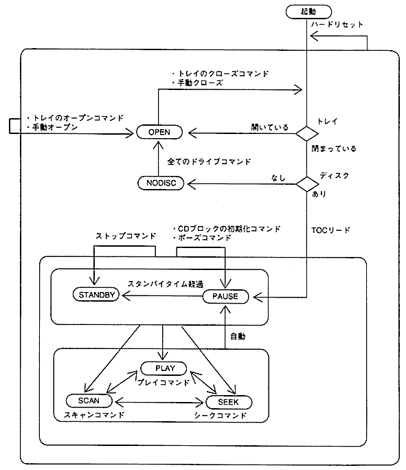
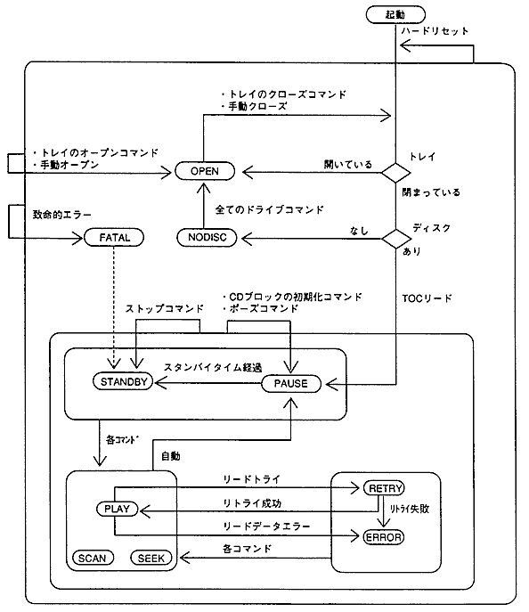
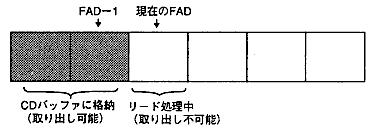
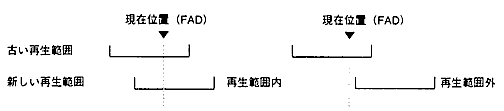
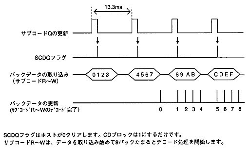

★PROGRAMMER'S GUIDE
★CD通信I/F(CDパート)
★PROGRAMMER'S GUIDE
★CD通信I/F(CDパート)
状 態 | 説 明 |
|---|---|
〈BUSY〉 | 状態遷移中 |
〈PAUSE〉 | ポーズ中（一時停止） |
〈STANDBY〉 | スタンバイ（ドライブ停止状態） |
〈PLAY〉 | CD再生中 |
〈SEEK〉 | シーク中 |
〈SCAN〉 | スキャン再生中 |
〈OPEN〉 | トレイが開いている |
〈NODISC〉 | ディスクがない |
〈RETRY〉 | リードリトライ処理中 |
〈ERROR〉 | リードデータエラーが発生した |
〈FATAL〉 | 致命的エラーが発生した（ストップコマンドが必要） |
ドライブコマンド | 対応する関数 |
|---|---|
CDブロックの初期化 | CDC_CdInit |
トレイのオープン | CDC_CdOpen |
プレイ | CDC_CdPlay |
シーク | CDC_CdSeek |
ポーズ | CDC_CdSeek |
ストップ | CDC_CdSeek |
スキャン | CDC_CdScan |
トレイオープン以外のドライブコマンドは、トレイのクローズコマンドを兼ねます。
原則として、後から発行されたコマンドが優先して実行されます。連続的に発行すると、先に発行したコマンドが上書きされてしまう場合があります。
確実に実行するには、〈BUSY〉以外の状態に遷移するまで発行しないでください。
図4.1 CDドライブの状態遷移図(正常系)

状態遷移中(矢印線上)では〈BUSY〉状態となります。
トレイのクローズコマンドとは、トレイオープン以外のドライブコマンドを指します。
トレイが閉まった後、各コマンドに対応する状態に遷移します。
例：〈OPEN〉状態におけるプレイコマンドは、トレイが閉まった後で〈PLAY〉状態になります。
図4.2 CDドライブの状態遷移図(エラー系)

状 態 | 説 明 | 内部状態 |
|---|---|---|
〈RETRY> | リトライが成功すれば〈PLAY〉に、失敗すれば〈ERROR〉になる。 | 〈SEEK〉 |
〈ERROR〉 | 次にドライブコマンドが発行されるまで状態は変わらない。 | 〈PAUSE〉 |
〈FATAL〉 | ストップコマンドを発行して復帰を試みてください。 | 〈STANDBY〉 |
操作 | 自動 | コマンド | ||||||
|---|---|---|---|---|---|---|---|---|
初 期 化 | ト レ イ | プ レ イ | シ ー ク | ポ ー ズ | ストップ | スキャン | ||
〈BUSY〉 | 変化あり | 〈PAUSE〉 | 〈OPEN〉 | 〈PLAY〉 | 〈SEEK〉 | 〈PAUSE〉 | 〈STANDBY〉 | 〈SCAN〉 |
〈PAUSE〉 | 〈STANDBY〉 | 〈PAUSE〉 | 〈OPEN〉 | 〈PLAY〉 | 〈SEEK〉 | 〈PAUSE〉 | 〈STANDBY〉 | 〈SCAN〉 |
〈STANDBY〉 | − | 〈PAUSE〉 | 〈OPEN〉 | 〈PLAY〉 | 〈SEEK〉 | 〈PAUSE〉 | 〈STANDBY〉 | 〈SCAN〉 |
〈PLAY〉 | 〈PAUSE〉 | 〈PAUSE〉 | 〈OPEN〉 | 〈PLAY〉 | 〈SEEK〉 | 〈PAUSE〉 | 〈STANDBY〉 | 〈SCAN〉 |
〈SEEK〉 | 〈PAUSE〉 | 〈PAUSE〉 | 〈OPEN〉 | 〈PLAY〉 | 〈SEEK〉 | 〈PAUSE〉 | 〈STANDBY〉 | 〈SCAN〉 |
〈SCAN〉 | 〈PAUSE〉 | 〈PAUSE〉 | 〈OPEN〉 | 〈PLAY〉 | 〈SEEK〉 | 〈PAUSE〉 | 〈STANDBY〉 | 〈SCAN〉 |
〈OPEN〉 | − | 〈PAUSE〉 | 〈OPEN〉 | 〈PLAY〉 | 〈SEEK〉 | 〈PAUSE〉 | 〈STANDBY〉 | 〈SCAN〉 |
〈NODISC〉 | − | 〈OPEN〉 | 〈OPEN〉 | 〈OPEN〉 | 〈OPEN〉 | 〈OPEN〉 | 〈OPEN〉 | 〈OPEN〉 |
〈RETRY〉 | 変化あり | 〈PAUSE〉 | 〈OPEN〉 | 〈PLAY〉 | 〈SEEK〉 | 〈PAUSE〉 | 〈STANDBY〉 | 〈SCAN〉 |
〈ERROR〉 | − | 〈PAUSE〉 | 〈OPEN〉 | 〈PLAY〉 | 〈SEEK〉 | 〈PAUSE〉 | 〈STANDBY〉 | 〈SCAN〉 |
〈FATAL〉 | − | 不定 | 不定 | 不定 | 不定 | 不定 | 不定※ | 不定 |
自動開閉式でない場合のトレイ開閉コマンドは、手動で実行されるまで〈BUSY〉となります。
〈OPEN〉状態でのコマンド(トレイオープンを除く)は、トレイのクローズ処理後、各状態に遷移します。
トレイが閉まった時、TOCリードできないと〈NODISC〉になります。(ディスクが入っていても)
〈PLAY〉,〈SCAN〉状態に遷移するときは、〈SEEK〉状態を経由する場合があります。
TOCリード後、最終セッションの開始位置から2秒0フレーム目で〈PAUSE〉状態になります。
図4.3 現在のFADが指すセクタ

リピート回数≧最大リピート回数ならばリピートしない。
現在位置で〈PAUSE〉状態になり、割り込み要因レジスタのPENDフラグが1になる。
図4.4 再生範囲と現在位置の関係

操作（コマンド） | リピートなし | リピートあり | ||
状態 | PEND | 状態 | PEND | |
CD再生が終了 | FAD＝終了位置＋1で〈PAUSE〉 | 1 | 開始位置にシークして〈PLAY〉 | 0 |
CD再生→再生範囲の変更 | 現在位置で〈PAUSE〉 | |||
シーク | 目標位置で〈PAUSE〉 | 1 | 目標位置で〈PAUSE〉 | 0 |
スキャン再生 | 不定位置で〈PAUSE〉 | 1 | 不定位置で〈PAUSE〉 | 0 |
PENDフラグの0は、変化なしを意味します。
CDドライブ状態は〈STANDBY〉に遷移し、レポートは無効値(FFHの並び)になる。
ホーム位置で〈PAUSE〉状態に遷移すると、ピックアップはディスク先頭に移動する。
保持している再生範囲、最大リピート回数、リピート通知回数は変更されません。
図4.5 サブコードの更新とSCDQフラグのタイミング

デコードの開始と終了
デコードのON/OFFは、CDブロックの初期化コマンドで設定します。
デコードを開始するには、デコードONを設定してから、CD-DAの再生を実行します。
デコード開始タイミング
〈PLAY〉時にデコードを開始します。
実際には、〈PLAY〉状態になる2フレーム前からデータを取り込み始めます。
パックバッファのクリアタイミング
デコード開始時にクリアされます。
ポーズ、シークをしてもパックバッファの内容は保持されます。
デコード条件
CD-DA再生時だけデコードされます。
他の場合(スキャン再生時やCD-ROM領域の再生時)にはデコードされません。
オーバーランエラー
パックの取得が間に合わないとパックバッファは上書きされ、オーバーランエラーになります。(実際にはパックデータを取得せずに23パックたまった時点で)データ転送終了後、取得ポインタはオーバーランエラーのないパックまで進みます。
パックデータエラー
CDブロックはパックデータのP系列・Q系列に対してCRCチェックをしており、エラーを検出した場合はデータを訂正します。
訂正が不可能なときはパックデータエラーになります。
★PROGRAMMER'S GUIDE
★CD通信I/F(CDパート)